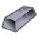
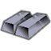
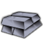
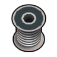
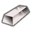
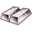

HSK 官方把它归在 Extracted/Metals/PRS(贵重品) 或 Metallic/RARBar 但材质覆盖≤2 的提纯金属——宝石·化石·未加工贵金属·纯铬纯钴纯镍纯钨钒锰钼锌焊锡等,只作收藏/贸易/配方原料与合金添加剂,**不参与能力档阶梯评价**(标 V 级)
太空Vile贵重级·太空·钼（Mo）Molybdenum
贵重品·不作材质提纯金属·焊料(合金添加剂) —— 建造/打造清单里不会拿它当材质(覆盖 0 件);当前被 3 条配方当原料消耗

生效·ACore_SK
生效·BCore_SK
生效·CCore_SKThings/Item/Ingot StackCount (165,168,187)被3条配方消耗
护甲 —/—/— 利钝 —/— 价值 15 质量 0.40 Bulk 0.40
stuff —
HSK RARBar
产自 Spec: Rutile (15 Ti, 10 Mo, 20 Chromium)(电解精炼厂/Metal processing IV) ; Spec: Scheelite (20 W, 20 Mo)(电解精炼厂/Metal processing IV)
源 Vile's Materials Science
Alloys_Intermediate.xml
太空Vile贵重级·太空·焊锡Solder
贵重品·不作材质提纯金属·焊料(合金添加剂) —— 建造/打造清单里不会拿它当材质(覆盖 0 件);当前被 3 条配方当原料消耗
生效 Things/Item/Parts/Solder (255,255,255)

SolderHSK修复整合同路径未生效(被覆盖)
 SolderVile's Materials Science
SolderVile's Materials ScienceThings/Item/Parts/Solder Single (255,255,255)被3条配方消耗另有 1 套同名贴图未生效
护甲 —/—/— 利钝 —/— 价值 15 质量 0.40 Bulk 0.40
stuff —
HSK RARBar
产自 Make solder (x10)(感应炉/Metal processing II) ; Make galvanite solder (x10)(感应炉/Metal processing II)
源 Vile's Materials Science
Alloys_Intermediate.xml
太空HSK上游补丁×2贵重级·太空·纯钨（W）Tungsten
贵重品·不作材质提纯金属·焊料(合金添加剂) —— 建造/打造清单里不会拿它当材质(覆盖 0 件);当前被 6 条配方当原料消耗
① 起点 · Core_SK 的 Defs 写 Things/Item/Ingot (240,230,230)

ACore_SK BCore_SK
BCore_SK CCore_SK
CCore_SK③ 生效(终态) Things/Item/Ingot (240,230,230)
 ACore_SK
ACore_SK
BCore_SKCCore_SKThings/Item/Ingot StackCount (240,230,230)被6条配方消耗贴图链 3 段
护甲 1.40/1.15/0.14 利钝 1.60/1.20 价值 40 质量 0.35 Bulk 0.35
stuff —
HSK RARBar, USLDHBar
产自 Spec: Cassiterite (15 Sn, 10 Mn, 15 W)(电解精炼厂/Metal processing IV) ; Spec: Scheelite (20 W, 20 Mo)(电解精炼厂/Metal processing IV) ; Adv: Scheelite (25 W)(金属提炼厂/Metal processing III)
源 Core_SK
Items_Resource_Alloys_Hightech.xml